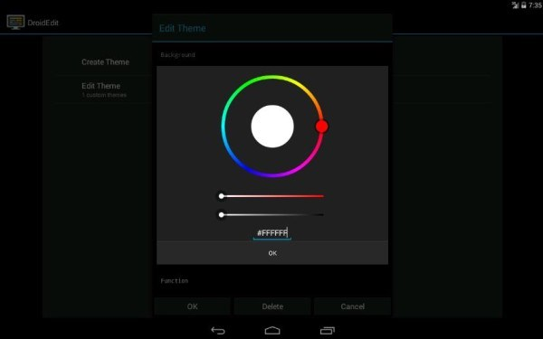
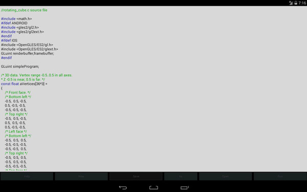

Si deseas que tu dispositivo Android, como teléfonos inteligentes y tabletas, pueda escribir código en cualquier momento y lugar, entonces echa un vistazo a los 15 editores de código Android que presentaré a continuación; sin duda se convertirán en tus herramientas ideales.
1.Deuter IDE
Un editor de texto para desarrollo móvil, compilador en línea, con un entorno de desarrollo integrado (IDE) incorporado para Android. Sus teclas virtuales proporcionan símbolos de programación comunes y resaltado de sintaxis, y admite más de 40 lenguajes de programación, lo que hace que escribir código sobre la marcha sea más fácil que nunca.

https://play.google.com/store/apps/details?id=com.didactic.DeuterIDE
2.DroidEdit
DroidEdit es un editor de texto y código fuente para tabletas y teléfonos Android (similar a gedit), con las siguientes funciones: resaltado de sintaxis para algunos lenguajes de programación (C, C++, C#, Java, HTML, CSS, JavaScript, Python, Ruby, Lua, LaTeX, SQL...).

https://play.google.com/store/apps/details?id=com.aor.droidedit&feature=also_installed
3.Code Peeker
Si solo quieres usar resaltado de sintaxis, buscar fragmentos y soluciones rápidas al leer código fuente, ¡entonces elige Code Peeker! Es un lector de código compacto que mejora tus conocimientos de codificación actuales al resaltar tu experiencia previa en programación.

https://play.google.com/store/apps/details?id=twig.nguyen.codepeeker
4.Code Me Silly
Code Me Silly no es un editor "lo que ves es lo que obtienes"... Es un editor de HTML, CSS, JavaScript y PHP con resaltado de sintaxis. Esta aplicación también admite Python, Java, C, C++, CoffeeScript, Haskell, Clojure y Groovy, pero se utiliza principalmente para el desarrollo web. Code Me Silly ofrece funciones de buscar/reemplazar, deshacer y rehacer.

https://play.google.com/store/apps/details?id=com.hoodwebmedia.hello
5.Java Code Viewer
Java CodeViewer (Java Code Viewer) — CodeViewer es un visor de texto, visor de Java, visor de C# y visor de otros lenguajes de programación compatibles con Android. Admite resaltado de sintaxis para Java, C#, C/C++, CSS, PHP, ASP y JavaScript.

https://play.google.com/store/apps/details?id=org.codein.codeviewer
6.AIDE—Android IDE—Java，C ++
AIDE es un entorno de desarrollo integrado (IDE) que admite el desarrollo de aplicaciones Android reales directamente en dispositivos Android. Mediante un proceso paso a paso te convierte en un experto en desarrollo de aplicaciones. Funciones: diseño visual de aplicaciones, editor de código multifunción para implementar código, comprobación de errores en tiempo real, refactorización y navegación inteligente de código, así como ejecutar aplicaciones con un solo clic.
https://play.google.com/store/apps/details?id=com.aide.ui
7.JavaIDEdroid
JavaIDEdroid no es adecuado para programadores novatos. Su función es similar a la de AIDE: te permite crear aplicaciones Android directamente en el dispositivo Android. Sin embargo, he descubierto que JavaIDEdroid no es muy fácil de usar y es más adecuado para usuarios que priorizan la funcionalidad sobre la apariencia.

https://play.google.com/store/apps/details?id=com.t_arn.JavaIDEdroid&feature=also_installed
8.Terminal IDE
Terminal IDE es una aplicación de terminal extensible, un kit de desarrollo completo de Java/C/C++/HTML/Android que se ejecuta en dispositivos Android. Utiliza la línea de comandos y viene con muchas aplicaciones de código abierto potentes y sólidas, además de un teclado ASCII "blando" personalizado en pantalla (debes habilitarlo en la configuración del teclado principal del dispositivo), y también cuenta con un mapeo de teclas universal y extenso para teclados externos "duros". Se puede acceder a CTRL/ALT/ESC, entre otros.

https://play.google.com/store/apps/details?id=com.spartacusrex.spartacuside
9.C4droid—C / C ++ comliler&IDE
C4droid es un compilador de C típico que se puede usar en dispositivos Android. Utiliza el compilador gcc, un compilador que normalmente se usa en Unix. La instalación de C4droid puede ser un poco complicada, así que prepárate mentalmente.

https://play.google.com/store/apps/details?id=com.n0n3m4.droidc
10.MobileC（Offline Compiler）
Se dice que el compilador C/C++ es un compilador C/C++ totalmente compatible. Sin embargo, en realidad solo puede compilar código C y no incluye C++. No obstante, el compilador de C parece funcionar bien, así que si necesitas un compilador de C, puede resultarte muy útil.

https://play.google.com/store/apps/details?id=GDE.Main
11.C＃To Go
¿Qué? ¿Quieres usar C# pero no encuentras uno que te guste? Jaja, entonces C# To Go, este pequeño compilador de C#, será tu nuevo favorito que podrás usar en cualquier momento.

https://play.google.com/store/apps/details?id=com.gregshackles.csharptogo
12.C++, Java Programs & Reference
Una colección de los mejores programas y referencias para preparar pruebas y entrevistas. Esta aplicación contiene referencias de Java, C++ y conjuntos de Intel 8086. Aiuto es una aplicación de referencia gratuita.

https://play.google.com/store/apps/details?id=in.nishitp.aiuto&hl=en
13.AWD—PHP / HTML / CSS / JS IDE
Android Web Developer (AWD) es un IDE (entorno de desarrollo integrado) que admite desarrollo web. Admite los siguientes lenguajes y formatos: PHP, CSS, JS, HTML, JSON.

https://play.google.com/store/apps/details?id=org.kidinov.awd
14.Quoda Code Editor
Quoda es un editor de código fuente complejo pero fácil de usar, y también es un IDE equipado con algunas funciones potentes: resaltado de sintaxis por temas, edición entre sesiones, autocompletado de código, fragmentos con tabulaciones y variables, etc.

https://play.google.com/store/apps/details?id=com.henrythompson.quoda&hl=en
15.920 Text Editor
920 Text Editor es un potente editor de texto que se ejecuta en teléfonos Android. No importa dónde estés, puedes ver y editar código fácilmente, e incluso puedes usarlo como lector de libros electrónicos para abrir novelas en formato TXT.

https://play.google.com/store/apps/details?id=com.jecelyin.editor
http://www.developerslane.com/top-15-android-code-editors-for-mobile-developers/
http://www.codeceo.com/article/15-android-code-editor.html
Traductor: Red de programadores – Xiao Feng